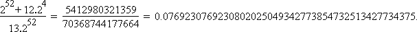

Solution to puzzle 106: Flying cards
 A standard pack of cards is thrown into the air in such a way that each card, independently, is equally likely to land face up or face down. The total value of the cards which landed face up is then calculated. (Card values are assigned as follows: Ace=1, 2=2, ... , 10=10, Jack=11, Queen=12, King=13. There are no jokers.)
A standard pack of cards is thrown into the air in such a way that each card, independently, is equally likely to land face up or face down. The total value of the cards which landed face up is then calculated. (Card values are assigned as follows: Ace=1, 2=2, ... , 10=10, Jack=11, Queen=12, King=13. There are no jokers.)
What is the probability that the total value is divisible by 13?
There are 252 equally likely configurations of face up/face down. We seek the number of configurations for which the sum of face up card values is divisible by 13.
Generating function
Consider the generating function
f(x) = (1 + x)4(1 + x2)4...(1 + x13)4 = a0 + a1x + a2x2 ... + a364x364.(1)
There is a bijection between each card configuration and a contribution to the corresponding term in the generating function. Each exponent in the generating function represents a total score; the corresponding coefficient represents the number of ways of obtaining that score.
Hence we seek the sum S = a0 + a13 + ... + a364.
Express S in terms of f(1), f(w), ... , f(w12)
Let w be a (complex) primitive 13th root of unity. Then w13 = 1 and 1 + w + w2 + ... + w12 = 0. Consider
| f(1) | = a0 + | a1 + | a2 + ... + | a13 + | a14 + ... + | a363 + | a364 |
| f(w) | = a0 + | a1w + | a2w2 + ... + | a13 + | a14w + ... + | a363w12 + | a364 |
| f(w2) | = a0 + | a1w2 + | a2w4 + ... + | a13 + | a14w2 + ... + | a363w11 + | a364 |
| f(w3) | = a0 + | a1w3 + | a2w6 + ... + | a13 + | a14w3 + ... + | a363w10 + | a364 |
| ... | |||||||
| f(w12) | = a0 + | a1w12 + | a2w11 + ... + | a13 + | a14w12 + ... + | a363w + | a364 |
Since w is a primitive root of unity, the set of values {wk, (wk)2, ... , (wk)12} is a permutation of {w, w2, ... , w12}, for any integer k not divisible by 13.
Therefore, adding these 13 equations, we obtain
f(1) + f(w) + ... + f(w12) = 13(a0 + a13 + ... + a364).
Hence S = [f(1) + f(w) + ... + f(w12)]/13.
Evaluate f(1), f(w), ... , f(w12)
Clearly, from (1), f(1) = 252.
Also, f(w) = [(1 + w)(1 + w2)...(1 + w13)]4.(2)
Consider g(x) = x13 - 1 = (x - w)(x - w2)...(x - w13).
Then g(-1) = -2 = (-1 - w)(-1 - w2)...(-1 - w13).
Hence (1 + w)(1 + w2)...(1 + w13) = 2.
Again, since w is a primitive root of unity, the terms of f(w2), ... , f(w12), will simply be a permutation of those for f(w), in (2).
Hence f(w) = f(w2) = ... = f(w12) = 2.
Conclusion
Putting the above results together, we obtain S = (252 + 12·24)/13.
Therefore, the probability that the total value is divisible by 13 is S/252 =
Further reading
Torsten Sillke gives a more general solution to the problem that served as the inspiration for this puzzle (see below) in partition probability.
Source: Inspired by problem K 24 in  Problems in Elementary Number Theory
Problems in Elementary Number Theory